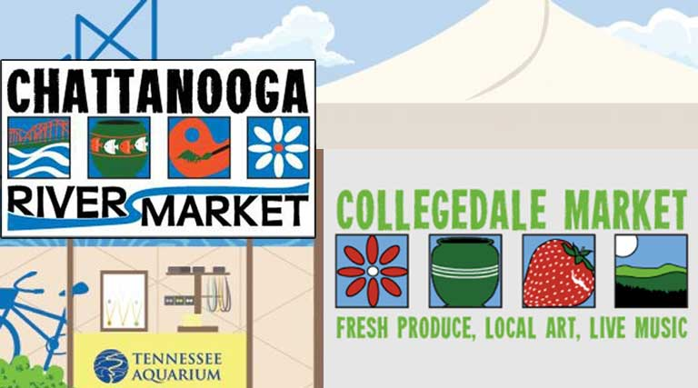

Welcome to the Chattanooga Markets
The Chattanooga Market is the region’s largest producer-only marketplace. It is established to provide fresh produce and locally-produced arts and craft wares to Chattanoogans and community visitors. It offers entrepreneurs who are hand-making, growing or otherwise creating their own goods a low-cost environment to start, grow and expand their business. Chattanooga will have three different market locations, and I am honored to be apart of them all!
Through our weekly public markets, we encourage commerce, entertainment and trade in downtown Chattanooga and the surrounding region, and have become an icon for the city in terms of cultural diversity, tourism and economic impact. Frommer’s has named us as one of the Top Ten Best Public Markets in America, and Fox News selected our Chattanooga Oktoberfest as one of the Best Family-Friendly Oktoberfests in the U.S. 